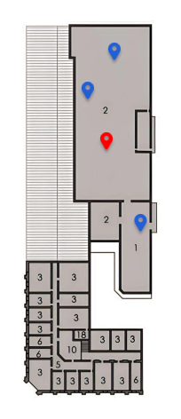

<!DOCTYPE html>
<html lang="en">
<head>
    <meta charset="UTF-8">
    <meta http-equiv="X-UA-Compatible" content="IE=edge">
    <meta name="viewport" content="width=device-width, initial-scale=1.0">
    <title>Document</title>
</head>

<body>
<!--PRIMEIRA
    <div style="position: relative;">
        
        <canvas id="canvas" style="position: absolute; top: 0; left: 0;">
        </canvas>
    </div>
    <script>
        const canvas = document.getElementById('canvas');
        const ctx = canvas.getContext('2d');

        canvas.addEventListener('click', (event) => {
        const x = event.offsetX;
        const y = event.offsetY;

        ctx.beginPath();
        ctx.arc(x, y, 5, 0, 2 * Math.PI);
        ctx.fillStyle = 'red';
        ctx.fill();
        });

    </script>
-->

<!--SEGUNDA
<canvas id="myCanvas"></canvas>
<script>
    const canvass = document.getElementById("myCanvas");
    const ctxs = canvass.getContext("2d");

    // criar um objeto Image e carregar a imagem
    const img = new Image();
    img.src = "./img/Mapa-Loc/Map-Planta-0.5x.png";
    img.onload = () => {
    // definir o tamanho do canvas baseado nas dimensões da imagem
    canvass.width = img.width;
    canvass.height = img.height;

    // desenhar a imagem dentro do canvas
    ctxs.drawImage(img, 0, 0);

    // adicionar um listener para o evento de clique no canvas
    canvass.addEventListener("click", (event) => {
        // obter a posição do clique dentro do canvas
        const x = event.offsetX;
        const y = event.offsetY;

        // desenhar um círculo vermelho na posição do clique
        ctxs.fillStyle = "red";
        ctxs.beginPath();
        ctxs.arc(x, y, 5, 0, Math.PI * 2);
        ctxs.fill();
    });
    };
</script>
-->

<!--TERCEIRA -->
    <canvas id="myCanvas"></canvas>
    <script>
        const canvass = document.getElementById("myCanvas");
        const ctxs = canvass.getContext("2d");

        // criar um objeto Image e carregar a imagem
        const img = new Image();
        img.src = "./img/Mapa-Loc/Map-Planta-0.5x.png";
        img.onload = () => {
            // definir o tamanho do canvas baseado nas dimensões da imagem
            canvass.width = img.width;
            canvass.height = img.height;

            // desenhar a imagem dentro do canvas
            ctxs.drawImage(img, 0, 0);


            const icon = new Image();
            icon.src = "img/Mapa-Loc/pin-loc-orange.png";

            // adicionar um listener para o evento de clique no canvas
            canvass.addEventListener("click", handleClick);

            function handleClick(event) {
                var x = event.pageX - canvass.offsetLeft;
                var y = event.pageY - canvass.offsetTop;
                ctxs.drawImage(icon, x - icon.width / 2, y - icon.height);
                console.log('X: '+x+' Y: '+y);
            }
        };
    </script>


<!-- <canvas id="myCanvas"></canvas>
 --><!-- 
<button id="undoButton">Desfazer último ponto</button>
<button id="clearBtn">Limpar</button>
 -->
<script src="js/teste_mapa.js"></script>
</body>
</html>